Trust-first pet sitting — from discovery to request sent.
PawStay is a concept redesign for a pet-sitting marketplace: clear profiles, honest booking states, and pricing before commitment. Most shipped client work stays under NDA — this case study shows the process when the real product can't go public.
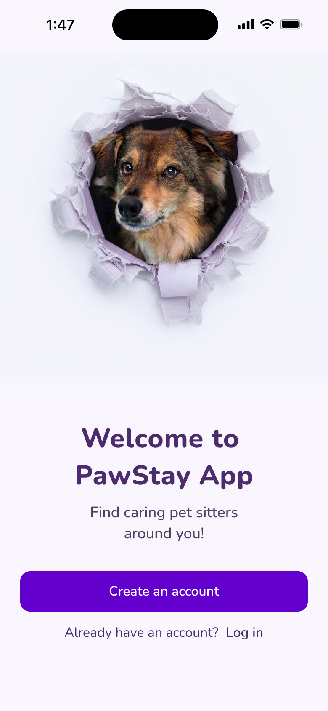
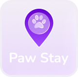
PawStay
Find caring pet sitters around you — a concept case study focused on trust, clarity, and honest booking states.
The problem
Pet owners don't need another cute app. They need to leave their pet with someone they trust — without digging through noise, guessing what's included, or abandoning a booking halfway through.
The earlier concept tried to do everything at once: health, reminders, sitters, vets, articles. Users had to think too hard before they could act.
Before → after
PawStay was redesigned from an earlier Behance proposal — keeping the core marketplace idea, but restructuring it around how people actually book care for their pets. The original tried to explain everything at once; the new version removes competing priorities, sharpens hierarchy, and guides owners from discovery to a sent request in a single, legible path. Same product ambition — clearer execution.
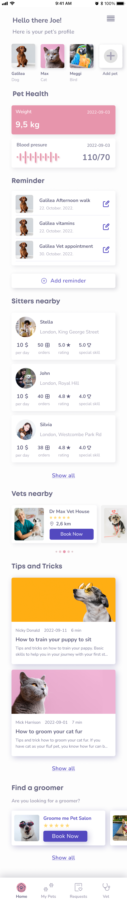
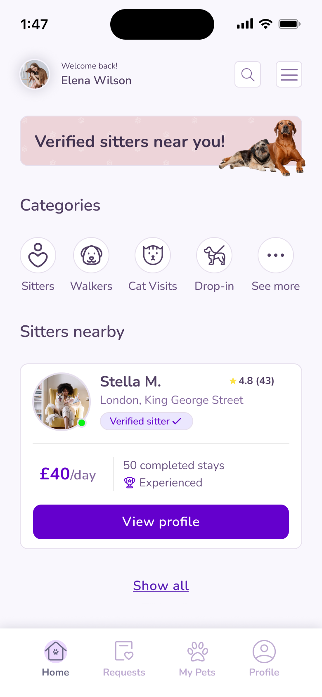
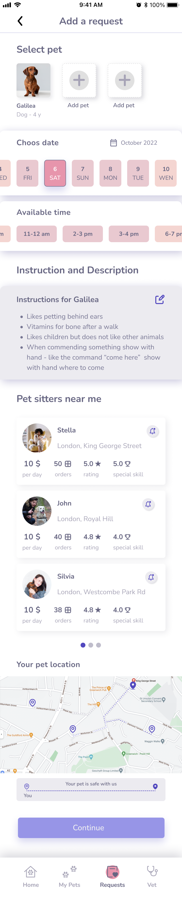
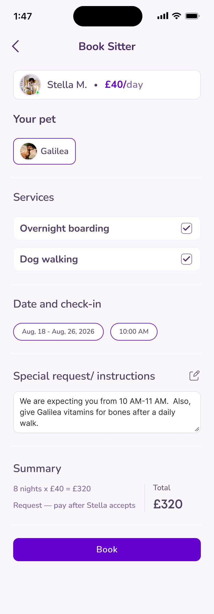
What users needed
- Trust first — verified sitters, reviews, and clear pricing before commitment.
- One job per screen — find a sitter, review profile, book, confirm. No dashboard dump on day one.
- Honest states — a request sent is not a booking confirmed. Users should know what happens next.
The solution
The solution is a trust-first mobile flow built around one question per screen: who to book, whether they're trustworthy, what it costs, and what happens after send is tapped. Home surfaces intent, the sitter profile carries proof, and checkout closes the loop with transparent pricing and honest confirmation — a request sent, not a false “booked” state.
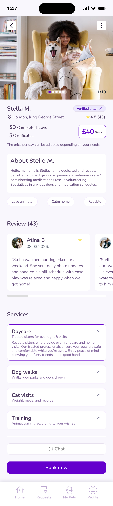
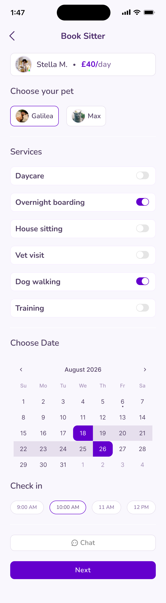
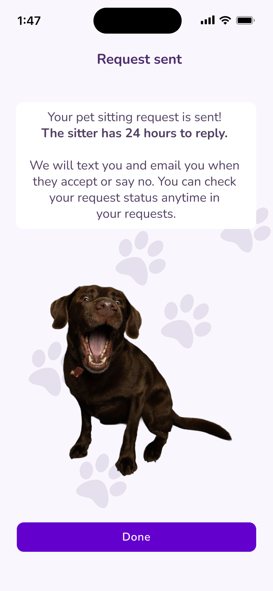
Light & dark
Shared components and accent tokens across themes — same hierarchy, two surfaces.
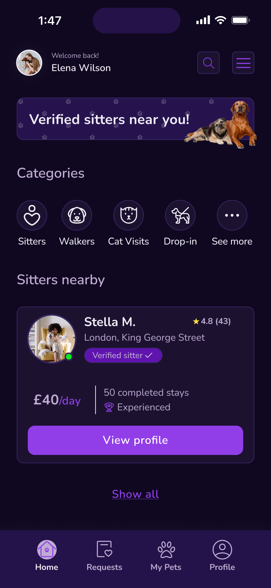
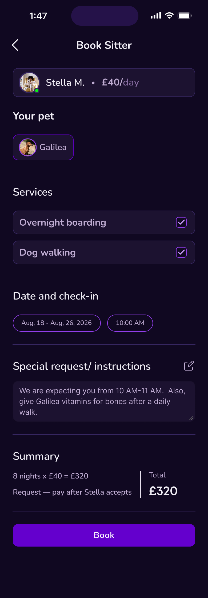
Outcomes
Concept project — no production metrics. These are the design outcomes from the redesign — structural improvements that came from designing around user intent, not feature lists.
From long scroll to intent-first categories and one featured sitter.
Reviews, verification, and services before the book action.
Date range, summary total, and request — not pay — as the final step.
Earlier exploration on Behance.